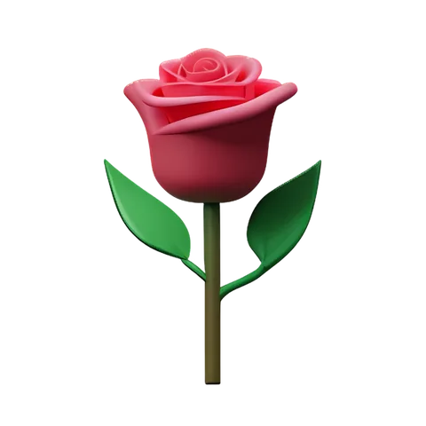
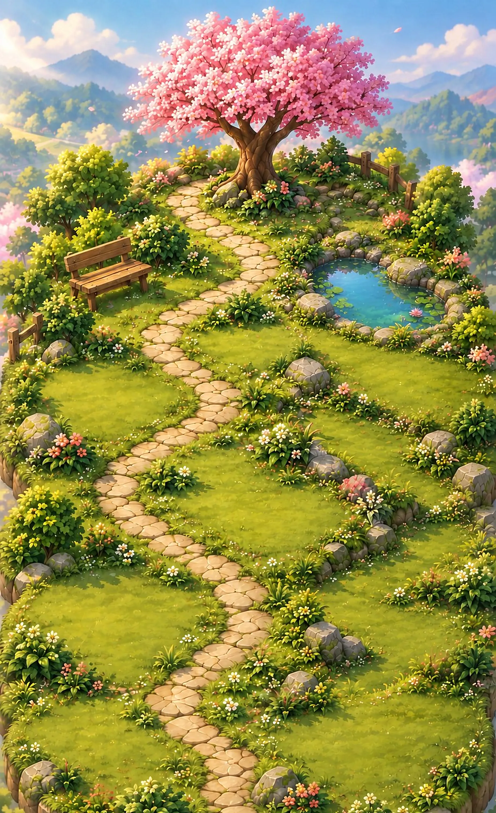
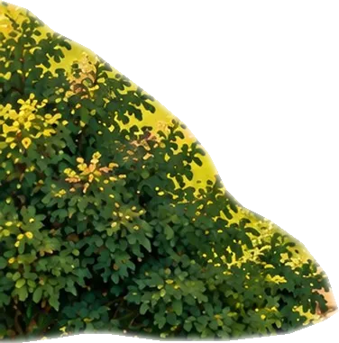
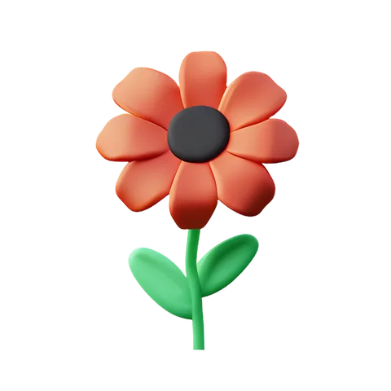
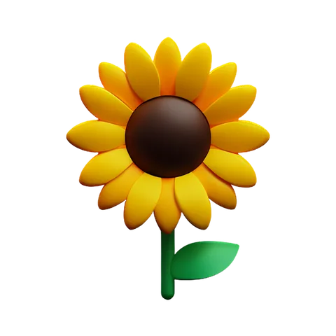
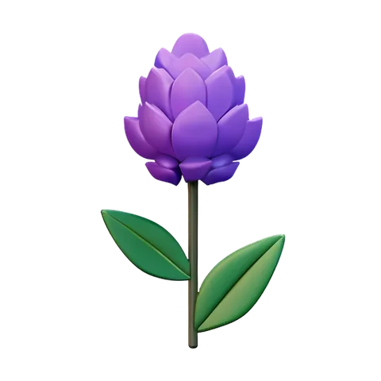

For couples
Gratitude Garden
Notice the good in each other.
Grow closer, one thank-you at a time.
Join the waitlistEvery thank-you becomes a flower in a garden you share.
01
Every flower
Every flower
says something
02
Take a walk
Take a walk
down your garden
This is the path from the app. It starts empty. Here is how it fills up.
-
listened to my whole day ♥01
Notice something
What did they do lately that you liked? Write it down in a few words. Out loud — not just in your head.
-
you make me laugh ♥

02Pick the flower that says it
A gerbera for the moments they made you laugh. A lily for the times they stood by you. Every flower has its own meaning.
-
for always being there ♥03
It blooms for both of you
Your partner gets a little note — “Alex noticed something about you” — and a new flower is waiting in the garden you share.
-
our sunday walks ♥

04Give it a drop of love
Water your flowers each day to keep them healthy. If it rained last night, the rain already did it for you.
-
you’re my peace ♥

05Visitors move in
As it grows, butterflies, birds, bees, a hedgehog and more find their way into your garden — each with its own little meaning.
03
Why a little thank-you goes a long way
5:1
Couples who stay together share about five positive moments for every negative one. Small, noticed kindnesses add up.
Gottman & Levenson, 19921day
Gratitude after a kind moment predicted feeling closer and more satisfied the next day — for both partners.
Algoe, Gable & Maisel, 20109months
The more grateful partners were, the more likely they were to still be together nine months later.
Gordon et al., 2012
04
More ways to grow together
Bouquets for the big days
Send a bouquet with a note only they would understand. It blooms on their screen the next time they open the app.
Days you’ll never forget
Save your anniversary and birthdays. You’ll both get a reminder in time, with the right bouquet ready.
Relive your story
Scroll back through every gratitude you’ve shared on your timeline — the two of you, one kind moment at a time.
Photos, videos and voice notes
Keep a photo, a short video or a voice note with a memory, like a stamp in your shared album.
05
Plant your first one
Pick a flower, write what they did, and watch it grow. Just for fun — nothing you type here is saved or sent.
Be one of the first couples to grow
Gratitude Garden: Couples is coming to iOS and Android. Join the waitlist and we’ll email you when your garden is ready.
Join the waitlistNo spam. Just a note when we’re ready to bloom.
06
Founder & developer
Kamyab Khosravi
I design and build Gratitude Garden for iOS and Android. It started with a simple idea: when we notice the good things in each other, they tend to grow. I wanted an app that makes saying them a small, daily habit — and makes it feel like something beautiful.
- Building
- Gratitude Garden: Couples
- Platforms
- iOS & Android
- Made with
- Kotlin Multiplatform